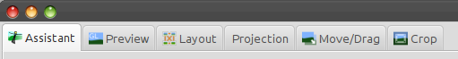

Hugin Main window
| 2013-01-23: | Currently these pages are completely rewritten to reflect the state of the new designed GUI which will be released in 2013 |
|---|
Contents
Tabs
Although there are many other uses, Hugin is primarily a tool for assembling multiple photos and creating a "seamless" panorama.
Hugin is a program that is "tab" based. Below you see a partial example screen of Hugin showing the tabs.
[*]
![[*]](http://wiki.panotools.org/File:Hugin2013_tabs.png){kind=link}
This process of assembling multiple photos and creating a "seamless" panorama is completely automatic if you use the Hugin Assistant tab, which is the default tab, but Hugin also allows full manual control of every stage. For this, Hugin provides three user interface options: Simple, Advanced and Expert. The Hugin simple mode consists of the Hugin Assistant tab and a few other tabs (as displayed above) that give you simple but effective control on what you are doing.
This is a quick overview of this tab system for the Simple interface. It isn't a step by step tutorial. You can find these tutorials on the Hugin website.
For this same overview regarding the "old" user interface (but still the user interface of the current stable release), you can start with Hugin Main window old gui[*].
Assistant
The Hugin Assistant tab is the fully automatic part of Hugin; here you can load images, align them and stitch them into a panorama without having to use any of the other tabs. The Hugin Assistant tab also consists of a panoramic overview and a preview. This overview and preview are visible on the other tabs as well, be it with different functionality and sometimes slightly modified layout.
Alternatively, you can use this Assistant as the first step in creating a project that can involve the use of some or all of the other tabs. You can also switch to one of the other user interface modes, Advanced and Expert, if you want or need to.
Preview
In the Hugin Preview tab, you have options to check your images and positions, the white balance, control points (equal points in two overlapping images), etcetera. Changes will immediately be displayed in this preview. This Hugin Preview tab is the same preview as displayed in the Hugin Assistant tab and all other tabs in the Simple User Interface.
Layout
The Layout tab shows the entire project as a diagram with colour-coded lines connecting each of the photographs.
![[*]](http://wiki.panotools.org/File:Hugin2013_layout_tab.png){kind=link}
Green lines connecting images show the control points have a small error; red lines show a large error. Grey lines show no control points connecting the images.
You can see where the project is OK and where there are problems if it isn't quite right. Just click on any connection and Hugin jumps to the Control Points tab to edit that pair of photos.
Use the Scale slider to change the size of the photo thumbnails. This only affects the Layout display and won't change the final panorama.
Projection
The Hugin Projection tab is for adjusting the projection of the panorama; some projections have adjustable parameters that will appear when selected.
Move/Drag
The Hugin Move/Drag tab is used to recentre the panorama interactively (or place it for whatever reason off centre).
Crop
The Hugin Crop tab displays a rectangle over your preview. By dragging the edges of this rectangle, you can adjust the output area of the panorama.
Menus
File
- New: Discard the current project and start a new empty project.
- Open an existing Hugin, PTGUI[*], PTAssembler[*], autopano or autopano-sift project file.
- Save the current project as a Hugin pto file.
- Save as a pto file with a different name.
- Most recently used projects shows a list of recent Hugin projects.
- Run Batch Processor launches the Hugin Batch Processor GUI queue manager; note that the queue won't be processed unless this queue manager is running.
- Preferences opens the Hugin Preferences window.
- Quit Hugin.
Edit
- Undo undoes the most recent change to the current project.
- Redo redoes an undo.
View
- Panorama Editor opens the Editor window where you have control over the various states a workflow is going through from a set of source images to the panorama.
- Full Screen shows this Hugin Main window using as much screen space as possible without any window decorations. Note that the Hugin Fast Preview window can also be set as full screen.
- Overview checkbox: Shows or hides the (docked) overview in the screen.
- Grid checkbox: Shows or hides the grid in the overview and preview canvas (see Hugin Assistant tab).
Interface
- Simple: This is the user interface this introduction is written for. It consists of all basic functionality to create a panorama and will suffice in 90% of all cases.
- Advanced: This user interface starts Hugin in the Panorama Editor screen. The Simple interface is available in the background.
- Expert: This user interface also starts Hugin in the Panorama Editor screen and unleashes all the power and options of Hugin.
Help
- Help opens the Hugin manual.
- Tip of the day
- Keyboard Shortcuts
- FAQ: Hugin Frequently asked questions
- About shows the Hugin About window[*].
- Donate opens the Hugin donation page; there is no obligation to donate. Any donations are used for travel and promotion costs related to Hugin development.